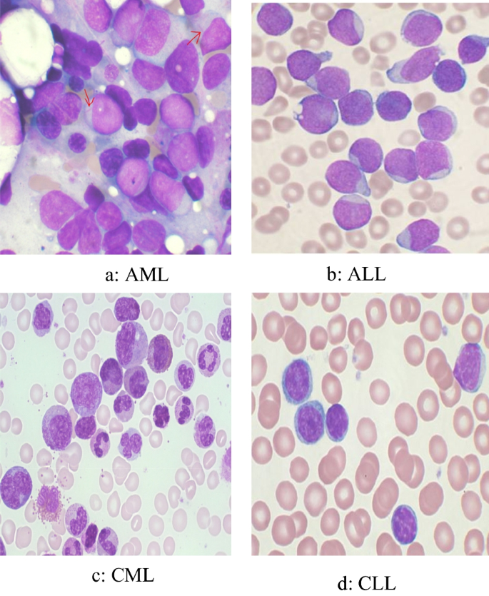
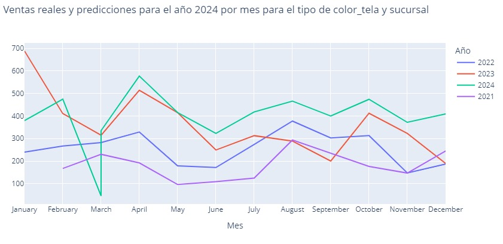
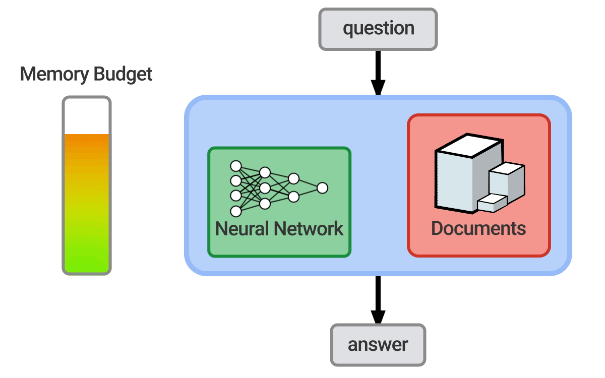

Introduction
This is a brief introduction to the webpage. Navigate through the links to learn more about me and my projects.
This is a brief introduction to the webpage. Navigate through the links to learn more about me and my projects.
I am Nico Vargas, a Data Analyst who loves creating dashboards and training machine learning models. My expertise lies in Python, Pandas, Numpy, scikit-learn, TensorFlow, and Flask, and I have a keen interest in Deep Learning & Neural Networks.
Here are some of the projects I've worked on related to machine learning:
This project involves using neural networks to classify and predict leukemia based on patient data. The model was trained on a comprehensive dataset to achieve high accuracy and reliability.
In this project, I developed a sales forecasting model to predict future sales based on historical data. The model helps businesses in planning and inventory management by providing accurate sales forecasts, in this image you can see one of the 115 predictions I made.
This project focuses on classifying text into various categories using machine learning models. The model was trained on a large corpus of text data to ensure accuracy and robustness in classification tasks.
